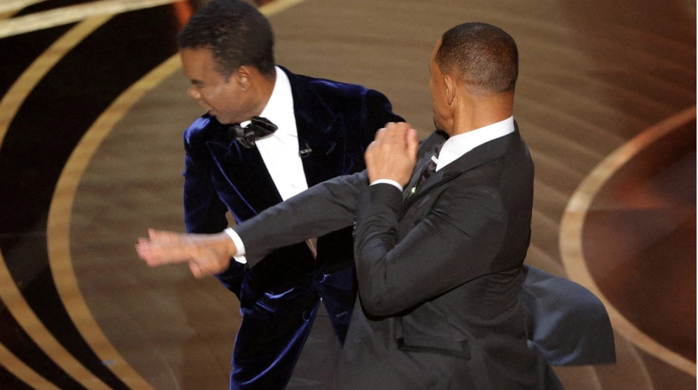

중학교 때 전교 1등.
고등학교 입학식에서 선서까지 했었다.
그래서인지,
입학하자마자 소문이 돌았다.
쟤 공부 잘하는 애래.
고1 때였다.
같은 반에
이상한 애가 하나 있었다.
내가 쓰던 문제집을 똑같이 사고,
쉬는 시간마다
내 필기 몰래 찍어가고.
…기분이 묘했다.
그러던 어느 날,
생기부 잘 써준다고 유명한
캠프가 있었다.
신청서를 써서 서랍에 넣어놨다.
점심에 내야지…
근데.
사라졌다.
그렇게 신청기간도 끝이 났다.
그거 걔가 버린 거 같아.
친구 말 듣는 순간,
머리가 하얘졌다.
복도에서 마주쳤고,
그대로—
짝!!!!

손이 먼저 나갔다.
걔는 울면서
계속 미안하다고 했다.
…근데 다음날.
학폭 신고했대.
복도에 CCTV도 있고
목격자도 많고.
결국
학교폭력위원회가 열렸다.
나는 계속 설명했다.
친구들의 증언도 있었고,
회의 끝에 나온 결론—

학폭 아님.
누명은 벗었는데,
…
그냥,
개빡치는 일이었다...